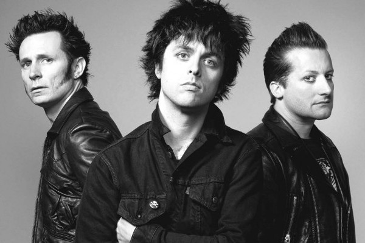
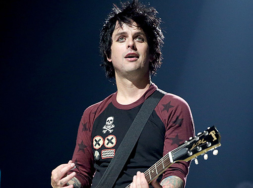
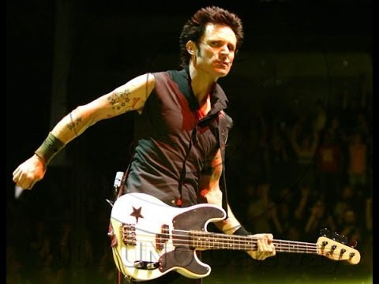
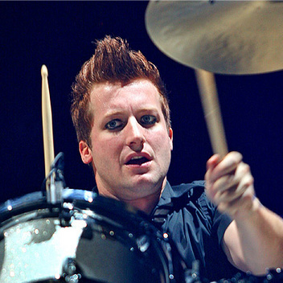
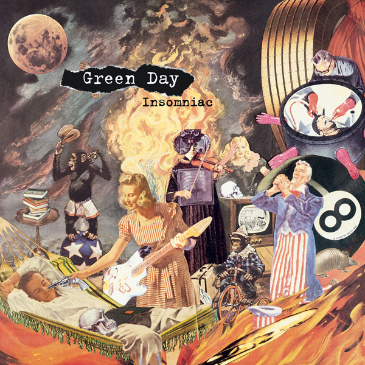
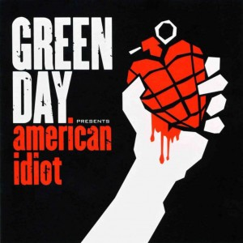
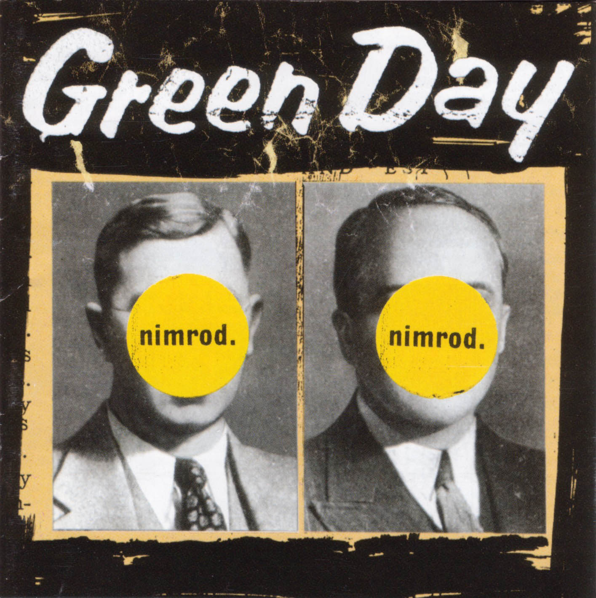
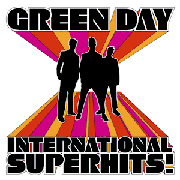
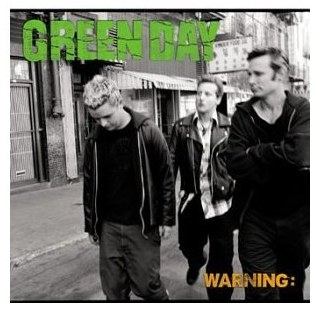

GREEN DAY: Un grupo de música Rock
Álbum pequeño de fotos

Green Day es un trío estadounidense de punk rock oriunda de Oakland, California y formada en 1989 por Billie Joe Armstrong y Mike Dirnt, a los que se sumó un año más tarde El Sobrante y Tré Cool para fundar Sweet Children, este conjunto más tarde fue renombrado Green Day. Este grupo fue uno de los impulsores de la segunda oleada punk, tras los años 1990, cuando grabaron en 1994 el álbum Dookie, su tercer disco. Actualmente está formada por Billie Joe Armstrong (voz y guitarra), Mike Dirnt (bajo y coros) y Tré Cool (batería). Los miembros de apoyo son Jason White (guitarra y coros), Jason Freese (teclado y saxofón) y Jeff Matika (guitarra acústica y coros).
Con sus dos primeros discos tuvieron alrededor de cinco millones de ventas cada uno. Sin embargo esta cifra se triplicó (con más de quince millones de copias) con Dookie, siendo este su álbum más exitoso. Con su siguiente álbum, Insomniac, obtuvieron las mismas cifras que con sus primeros discos, cinco millones de ventas. Green Day ha vendido más de 65 millones de álbumes alrededor del mundo y 24 millones solo en Estados Unidos, y diversos premios como los cuatro Premios Grammy la Grabación del Año por "Boulevard of Broken Dreams".
Tras el lanzamiento de American Idiot el grupo permaneció inactivo durante cinco años (a excepción del lanzamiento de diversos sencillos) hasta el lanzamiento de su último álbum, 21st Century Breakdown, el 15 de mayo de 2009.
Los integrantes del grupo

Billie Joe Armstrong

Mike Dirnt

Álbumes de Green Day

Su primer álbum, el más exitoso

Otro álbum famoso en ventas

Un éxito del grupo

Nimrod (octubre de 1997) y siendo más artístico y conceptual que los anteriores. El álbum fue elogiado por la critica, por incluir otros estilos de música (King For A Day, Walking Alone, Good Riddance (Time of Your Life) y Last Ride In)


el cual fue lanzado en el mes de octubre en la ciudad de Nueva York, el cual muestra al grupo mas evolucionado y a la vez mas serio; una evolución musical que los hizo madurar como grupo. A pesar de esto el álbum fue un fracaso comercial convirtiéndose en el menos vendido de su carrera.